D'après le programme officiel tunisien (Thème 1, Partie II), ce chapitre vise à :
1 Expliquer le mécanisme de la digestion
2 Préciser le rôle des glandes et des sucs digestifs
3 Reconnaître les conditions d'activité enzymatique
4 Identifier les voies d'absorption des nutriments
📚 Situation Problème (p.55-56)
Les aliments que nous consommons — makroudh (riche en amidon, huile, sucre) et chorba (riche en amidon, protéines, huile) — sont des aliments composés. Seuls les nutriments, molécules de petite taille, traversent la paroi intestinale. Les macromolécules doivent donc être simplifiées : c'est la digestion.
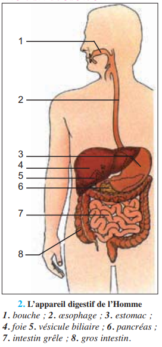
📷 Doc.2 — Makroudh riche en amidon, en huile et en sucre (p.56)
'">
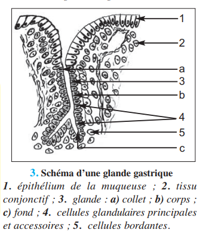
📷 Doc.3 — Chorba riche en amidon, en protéines, en huile... (p.56)
Un aliment composé est un ensemble d'aliments simples (protéiques, glucidiques, lipidiques). Un aliment simple est un ensemble de nutriments. La digestion est la transformation des aliments simples en nutriments grâce aux sucs digestifs. Les nutriments passent dans le sang au niveau des villosités intestinales : c'est l'absorption.
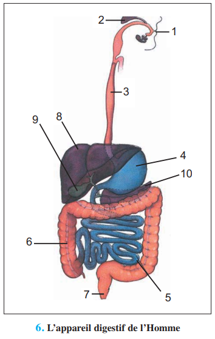
📷 Doc.4 — L'appareil digestif de l'Homme — schéma à légender (p.57)
'">
✏️ Mini-quiz — Préacquis
1. Les aliments composés contiennent des .
2. La digestion transforme les aliments simples en .
3. L'absorption a lieu au niveau .
💡 À retenir : La digestion est une simplification moléculaire qui transforme les macromolécules alimentaires (amidon, protéines, lipides) en petites molécules absorbables (oses, acides aminés, acides gras). Cette transformation est réalisée par des enzymes contenues dans les sucs digestifs. La digestion commence dans la bouche et se poursuit tout au long du tube digestif.
❓ 3 Questions directrices (p.57)
Comment se fait la transformation des aliments simples en nutriments ?
Quels sont les sucs digestifs et les enzymes impliqués ?
Quelles sont les conditions d'action des enzymes digestives ?
🧠 Comprendre avant de mémoriser
La digestion est une simplification moléculaire : les macromolécules (amidon, protéines, lipides) sont hydrolysées en nutriments (glucose, acides aminés, acides gras). Cette transformation est réalisée par des enzymes, catalyseurs biologiques spécifiques qui agissent dans des conditions précises de température et de pH. Le modèle clé-serrure explique la spécificité enzyme-substrat. Après digestion, les nutriments sont absorbés au niveau des villosités intestinales par deux voies : sanguine et lymphatique.
Clique sur chaque notion · Pièges CAPES et connexions révélés
🧪
Simplification
Macromolécules → Nutriments
⚙️
Enzymes
Spécificité · T° · pH
🩸
Absorption
Villosités · 2 voies
⚠️
3 Pièges
Erreurs fréquentes
🔗
Connexions
Ch.2 · Ch.4 · Thème 1
🧪 La digestion = simplification moléculaire
La digestion transforme les aliments simples (macromolécules) en nutriments (petites molécules) par des réactions d'hydrolyse. Chaque type d'aliment est hydrolysé par une enzyme spécifique. L'hydrolyse est une réaction chimique qui utilise l'eau pour couper les liaisons covalentes.
Aliment simple
Enzyme
Produit
Amidon (polyoside)
Amylase salivaire
Maltose (diholoside)
Protéines
Pepsine
Polypeptides
Lipides
Lipase
Acides gras + Glycérol
⚙️ Caractéristiques des enzymes
Caractéristique
Description
Spécificité
Une enzyme n'agit que sur un substrat précis (modèle clé-serrure)
Température optimale
30-40°C. Au-delà → dénaturation irréversible
pH optimal
Pepsine = pH 2 · Amylase = pH 7 · Trypsine = pH 9
🩸 Absorption intestinale
Deux voies au niveau de l'intestin grêle : voie sanguine (oses, acides aminés, eau, sels, vitamines B et C) et voie lymphatique (acides gras, glycérol, vitamines liposolubles A, D, E, K). La lymphe rejoint le sang au niveau de la veine cave.
⚠️ 3 Pièges
⚠️ Enzyme = catalyseur biologique protéique ▼
Toutes les enzymes sont des protéines. Elles sont dénaturées par la chaleur (>60°C) de façon irréversible. À basse température (0°C), elles sont seulement inactivées réversiblement. Ne pas confondre inactivation et dénaturation.
⚠️ Spécificité enzyme-substrat ▼
L'amylase n'hydrolyse QUE l'amidon, pas les protéines. La pepsine n'hydrolyse QUE les protéines, pas l'amidon. Chaque enzyme reconnaît son substrat grâce à la complémentarité structurale entre le site actif de l'enzyme et le substrat (modèle clé-serrure).
⚠️ pH ≠ même pour toutes les enzymes ▼
Pepsine (estomac) = pH 2 optimal grâce à HCl. Amylase salivaire (bouche) = pH 7. Trypsine (pancréas) = pH 9. Chaque enzyme a son pH optimal. La bile, elle, ne contient PAS d'enzymes — elle émulsionne les lipides.
🔗 Connexions
← Ch.2 — Besoins nutritionnels
Les aliments simples étudiés au Ch.2 sont ici transformés en nutriments absorbables.
→ Ch.4 — Respiration
Les nutriments absorbés (glucose) seront dégradés par la respiration cellulaire (Ch.4).
💭 Réflexion
1. Pourquoi la pepsine agit-elle dans l'estomac (pH 2) mais pas dans l'intestin (pH 8) ?
La pepsine a un pH optimal de 2. Dans l'intestin (pH 8), sa conformation spatiale est modifiée → le site actif n'est plus complémentaire du substrat → l'enzyme est inactive. Chaque enzyme possède une structure tridimensionnelle qui dépend du pH de son milieu d'action.
📜 Activité 1 — Expériences historiques sur la digestion (p.58)
Spallanzani et la découverte de la digestion chimique
Au XVIIIe siècle, les scientifiques pensaient que la digestion était un phénomène purement mécanique (trituration par les parois de l'estomac). L'abbé Spallanzani (1729-1799) va prouver, par une série d'expériences ingénieuses sur lui-même et sur des animaux, que la digestion est aussi — et surtout — un phénomène chimique.
Expérience
Résultat observé
Conclusion
1. Bourse de toile + pain mâché avalée puis récupérée après 23h
Le pain a disparu. La toile est intacte.
La digestion n'est PAS une trituration mécanique — sinon la toile aurait été déchirée.
2. Bourse + chair de pigeon cuite — 18h45 dans l'estomac
Les chairs sont entièrement digérées.
Le résultat est valable aussi pour les aliments d'origine animale.
3. Tube en bois percé + chair de veau — 22h dans l'estomac
La chair a disparu malgré la protection du tube.
Preuve décisive contre la trituration : le suc gastrique agit chimiquement à travers les trous.
4. Suc gastrique in vitro sur viande à 30-35°C (sans estomac)
La viande se dissout en 35h. Dans l'eau pure : aucune dissolution.
Le suc gastrique contient un agent chimique actif responsable de la digestion — découverte des enzymes.
🔍 Conclusion historique : Spallanzani démontre que la digestion n'est PAS mécanique (trituration) mais CHIMIQUE. Le suc gastrique contient des substances — plus tard appelées ENZYMES — qui dissolvent les aliments. Il prouve aussi que cette action nécessite une température proche de celle du corps (30-35°C).
✏️ Mini-quiz — Activité 1
1. Avant Spallanzani, on pensait que la digestion était .
2. L'expérience du tube en bois percé prouve que .
3. L'expérience in vitro (suc gastrique seul) a été réalisée à .
💡 À retenir : Les expériences de Spallanzani constituent le fondement historique de la biochimie digestive. Il a établi que la digestion est une transformation chimique catalysée par des substances contenues dans les sucs digestifs, agissant à température corporelle. Ces substances seront identifiées plus tard comme des enzymes (protéines catalytiques).
🧪 Activité 2 — La digestion de l'amidon (p.59–61)
A — La salive et l'amylase salivaire (p.59-60)
La digestion de l'amidon commence dans la bouche sous l'action de la salive. La salive est un suc digestif produit par les glandes salivaires (1 à 2 litres par jour). Elle contient 99% d'eau, des sels minéraux, des protéines et une enzyme : l'amylase salivaire (ou ptyaline).
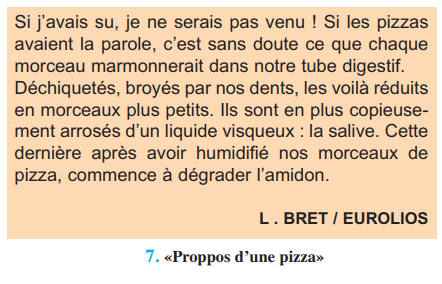
📷 Doc.5 — «Proppos d'une pizza» — illustration humoristique de la mastication et de l'action de la salive (p.59)
'">
L'amylase salivaire catalyse l'hydrolyse de l'amidon (polyoside de formule (C₆H₁₀O₅)ₙ) en maltose (diholoside de formule C₁₂H₂₂O₁₁). La réaction nécessite de l'eau : (C₆H₁₀O₅)ₙ + n/2 H₂O → n/2 C₁₂H₂₂O₁₁.
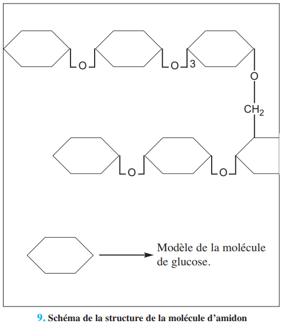
📷 Doc.7 — 9. Schéma de la structure de la molécule d'amidon : chaîne de glucose (p.59)
'">
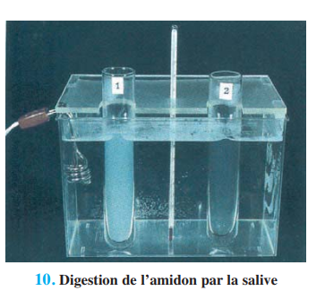
📷 Doc.8 — 10. Digestion de l'amidon par la salive : tubes T1 (témoin) et T2 (salive) au bain-marie à ≈40°C (p.60)'">
🔍 Résultat expérimental : Dans le tube T2 (amidon + salive), le test à l'eau iodée devient négatif (disparition de l'amidon) et le test à la liqueur de Fehling devient positif (apparition d'un sucre réducteur : le maltose). Dans le tube T1 (témoin sans salive), l'amidon persiste.
✏️ Mini-quiz 2A
1. L'amylase salivaire hydrolyse l'amidon en .
2. Le test à l'eau iodée permet de détecter .
💡 À retenir : L'amylase salivaire est une hydrolase — elle catalyse une réaction d'hydrolyse. Le produit de la réaction (maltose) est un sucre réducteur qui réduit la liqueur de Fehling (précipité rouge brique). La salive agit dans la bouche à pH ≈ 7 et 37°C.
B — Conditions d'action de l'amylase salivaire (p.61)
Pour déterminer les conditions optimales d'action de l'amylase salivaire, on réalise une expérience avec 5 tubes dans différentes conditions de température, de pH et de substrat.
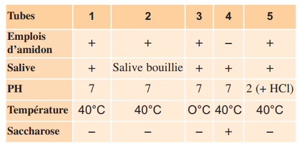
📷 Doc.9 — Tableau des 5 tubes à essai pour tester les conditions d'action de l'amylase salivaire (T°, pH, spécificité) (p.61)
'">
Tube
Contenu
Condition
Résultat
Conclusion
1
Amidon + Salive
37°C, pH 7
Digestion
Conditions optimales
2
Amidon + Salive bouillie
37°C, pH 7
Pas de digestion
Enzyme dénaturée par chauffage
3
Amidon + Salive
0°C, pH 7
Pas de digestion
Enzyme inactivée par le froid
4
Amidon + Salive
37°C, pH 2
Pas de digestion
pH non optimal
5
Saccharose + Salive
37°C, pH 7
Pas de digestion
Spécificité : l'amylase n'agit que sur l'amidon
✏️ Mini-quiz 2B
1. Le tube 2 (salive bouillie) ne digère pas car l'enzyme est .
2. Le tube 3 (0°C) ne digère pas car l'enzyme est .
3. Le tube 5 (saccharose) montre que l'amylase est .
💡 À retenir : L'amylase salivaire agit de façon optimale à 37°C et pH 7 (conditions de la bouche). Elle est spécifique de l'amidon. La chaleur (>60°C) la dénature irréversiblement ; le froid (0°C) l'inactive réversiblement. Ces propriétés sont communes à toutes les enzymes digestives.
🧬 Activité 3 — La digestion des protéines par la pepsine (p.62–63)
La pepsine : une enzyme gastrique spécifique des protéines
La pepsine est une enzyme du suc gastrique, sécrétée par les glandes de la paroi de l'estomac. Elle catalyse l'hydrolyse des protéines (ex : ovalbumine) en polypeptides et acides aminés. Le suc gastrique contient également de l'acide chlorhydrique (HCl) qui abaisse le pH à environ 2 — condition indispensable à l'activité de la pepsine.
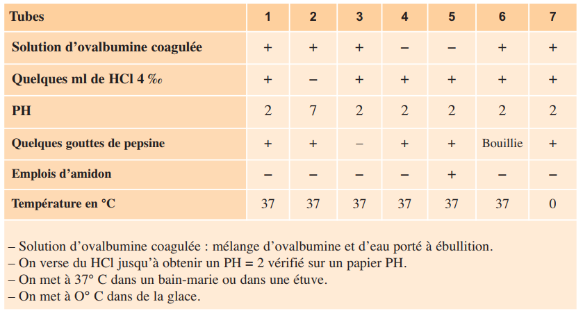
📷 Doc.10 — Tableau des 7 tubes pour tester les conditions d'action de la pepsine sur l'ovalbumine (pH, T°, spécificité) (p.62-63)
'">
Le test de Biuret permet de suivre la digestion : il est positif (coloration bleu violacée) en présence de liaisons peptidiques (protéines non digérées). Quand la pepsine a hydrolysé l'ovalbumine, il n'y a plus de liaisons peptidiques → Biuret négatif → digestion effective.
🔍 Résultats clés : Tube 1 (pepsine + ovalbumine + HCl à 37°C) = digestion (Biuret négatif). Tube 2 (sans HCl) = pas de digestion. Tube 3 (sans pepsine) = pas de digestion. Tube 4 (pepsine seule, sans ovalbumine) = témoin. Tube 5 (pepsine bouillie) = pas de digestion. Tube 6 (amidon au lieu d'ovalbumine) = pas de digestion → spécificité. Tube 7 (0°C) = pas de digestion.
✏️ Mini-quiz — Activité 3
1. La pepsine agit dans l'estomac à pH optimal de .
2. La pepsine est spécifique .
3. Le test de Biuret devient négatif quand .
💡 À retenir : La pepsine est une endopeptidase qui hydrolyse les liaisons peptidiques à l'intérieur des chaînes protéiques. Elle agit exclusivement en milieu acide (pH 2), condition réalisée dans l'estomac grâce à la sécrétion de HCl par les cellules pariétales. Sans HCl, la pepsine est inactive — ce qui montre l'importance de l'environnement chimique pour l'activité enzymatique.
⚙️ Activité 4 — Caractéristiques de l'activité enzymatique (p.64–66)
A — La spécificité enzymatique : modèle clé-serrure (p.64)
Les enzymes sont des catalyseurs biologiques de nature protéique. Elles présentent une double spécificité : spécificité de substrat (une enzyme n'agit que sur un substrat précis) et spécificité de réaction (les enzymes digestives catalysent toutes des hydrolyses — ce sont des hydrolases).
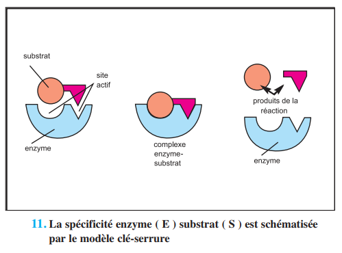
📷 Doc.11 — 11. La spécificité enzyme (E) substrat (S) est schématisée par le modèle clé-serrure (p.64)
'">
Le modèle clé-serrure explique cette spécificité : le site actif de l'enzyme (la serrure) possède une configuration spatiale complémentaire de celle du substrat (la clé). Seul le substrat spécifique peut se fixer dans le site actif pour former le complexe enzyme-substrat, indispensable à la réaction d'hydrolyse.
✏️ Mini-quiz 4A
1. Le modèle clé-serrure explique la .
2. Les enzymes digestives sont toutes des .
💡 À retenir : La spécificité enzymatique est la propriété fondamentale qui permet à chaque enzyme de reconnaître son substrat parmi des milliers de molécules présentes dans la cellule. Cette reconnaissance repose sur une complémentarité géométrique et chimique entre le site actif et le substrat, comme une clé dans sa serrure.
B — Influence de la température (p.65)
L'activité enzymatique dépend étroitement de la température. On mesure l'efficacité enzymatique en fonction de la température du milieu réactionnel.
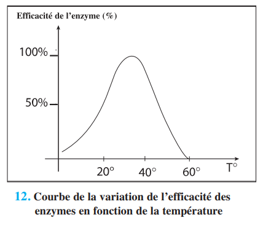
📷 Doc.12 — 12. Courbe de la variation de l'efficacité des enzymes en fonction de la température (p.65)
'">
Zone de température
Effet sur l'enzyme
Réversibilité
0-10°C (basse T°)
Enzyme inactivée — activité très faible ou nulle
✅ Réversible
30-40°C (T° optimale)
Activité maximale
—
> 60°C (haute T°)
Enzyme dénaturée — perte définitive d'activité
❌ Irréversible
✏️ Mini-quiz 4B
1. La température optimale des enzymes est .
2. À haute température (>60°C), l'enzyme est .
💡 À retenir : La dénaturation thermique s'explique par la nature protéique des enzymes. Au-delà de 60°C, les liaisons faibles (hydrogène, ioniques) qui maintiennent la structure tridimensionnelle de la protéine sont rompues. L'enzyme perd sa configuration spatiale → le site actif est déformé → plus de reconnaissance du substrat → activité catalytique abolie.
C — Influence du pH (p.65)
Chaque enzyme possède un pH optimal qui dépend de son environnement d'action dans l'organisme.
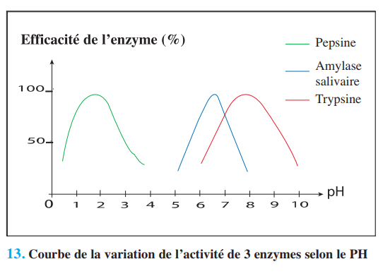
📷 Doc.13 — 13. Courbe de la variation de l'activité de 3 enzymes selon le pH : pepsine (pH 2), amylase salivaire (pH 7), trypsine (pH 9) (p.65)
'">
Enzyme
Origine
pH optimal
Milieu d'action
Pepsine
Suc gastrique (estomac)
≈ 2
Très acide (HCl)
Amylase salivaire
Salive (bouche)
≈ 7
Neutre
Trypsine
Suc pancréatique
≈ 9
Basique
✏️ Mini-quiz 4C
1. La pepsine a un pH optimal .
2. La trypsine, enzyme pancréatique, a un pH optimal .
3. Si on place la pepsine à pH 8, elle sera .
💡 À retenir : Le pH influence l'état d'ionisation des acides aminés du site actif. Un pH non optimal modifie les charges électriques → déformation du site actif → perte de complémentarité avec le substrat. Chaque enzyme est donc adaptée à son milieu d'action dans le tube digestif.
D — Influence de la concentration en enzyme et en substrat (p.66)
La vitesse de réaction enzymatique dépend également des concentrations respectives en enzyme et en substrat.
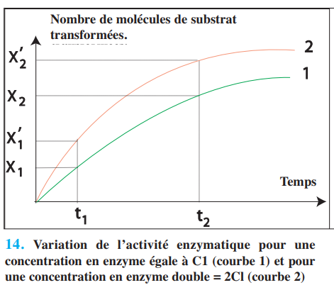
📷 Doc.14 — Variation de l'activité enzymatique pour une concentration en enzyme C1 et 2C1 (p.66)
'">
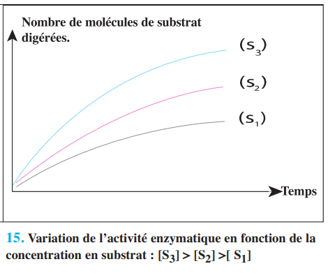
📷 Doc.15 — Variation de l'activité enzymatique en fonction de la concentration en substrat [S] (p.66)
'">
Concentration en enzyme : Si on double la concentration en enzyme (2C1), la vitesse initiale de la réaction double — à condition que le substrat soit en excès. Concentration en substrat : La vitesse augmente avec [S] jusqu'à un plateau de saturation : tous les sites actifs sont occupés → vitesse maximale (Vmax) atteinte.
✏️ Mini-quiz 4D
1. Si on double la concentration en enzyme, la vitesse de réaction .
2. Le plateau de saturation signifie que .
💡 À retenir : La cinétique enzymatique suit le modèle de Michaelis-Menten. À faible [S], la vitesse est proportionnelle à [S]. À forte [S], l'enzyme est saturée — la vitesse n'augmente plus. Ce concept est fondamental pour comprendre la régulation du métabolisme cellulaire.
🩸 Activité 5 — L'absorption intestinale (p.67–68)
A — La villosité intestinale, siège de l'absorption (p.67)
À la fin de la digestion, l'intestin grêle renferme tous les nutriments. Ceux-ci passent dans le milieu intérieur : c'est l'absorption intestinale. La paroi de l'intestin grêle présente une structure hautement adaptée à cette fonction.
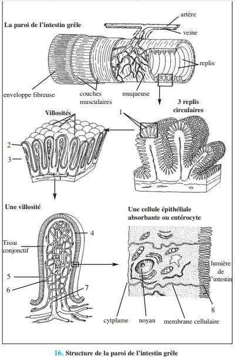
📷 Doc.16 — 16. Structure de la paroi de l'intestin grêle : villosités, microvillosités, vaisseaux sanguins et lymphatiques (p.67)
'">
La paroi intestinale forme plus de 10 millions de replis richement vascularisés, offrant une surface d'échange d'environ 400 m². Chaque villosité contient un réseau de capillaires sanguins et un vaisseau lymphatique (chylifère). Les microvillosités (200 000/mm²) augmentent encore la surface d'absorption.
✏️ Mini-quiz 5A
1. L'absorption intestinale a lieu au niveau .
2. La surface d'échange totale de l'intestin grêle est d'environ .
💡 À retenir : L'adaptation de la paroi intestinale à l'absorption repose sur trois niveaux de replis : valvules conniventes (replis de la muqueuse), villosités (saillies digitiformes) et microvillosités (replis de la membrane plasmique des entérocytes). Cette organisation maximise la surface d'échange avec les nutriments.
B — Les voies de l'absorption (p.68)
Deux voies d'absorption s'offrent aux nutriments au niveau de l'intestin grêle : la voie sanguine et la voie lymphatique.
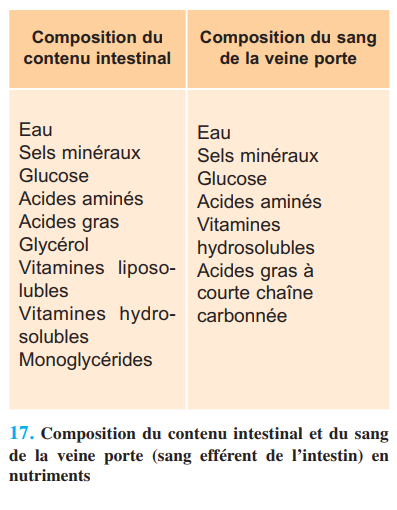
📷 Doc.17 — Tableau comparatif : composition du contenu intestinal et du sang de la veine porte (p.68)
'">
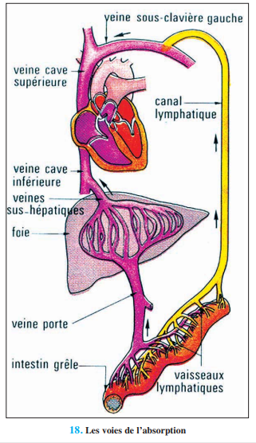
📷 Doc.18 — 18. Les voies de l'absorption : voie sanguine (veine porte → foie) et voie lymphatique (chylifères → veine cave) (p.68)'">
Voie sanguine (veine porte → foie)
Voie lymphatique (chylifères → veine cave)
Oses (glucose, fructose, galactose)
Acides gras à longue chaîne
Acides aminés
Monoglycérides
Eau et sels minéraux
Glycérol
Vitamines hydrosolubles (B, C)
Vitamines liposolubles (A, D, E, K)
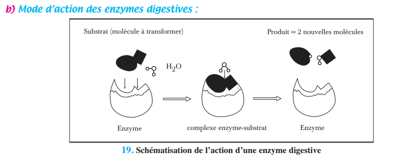
📷 Doc.19 — 19. Schématisation de l'action d'une enzyme digestive : substrat → produit (p.69)'">
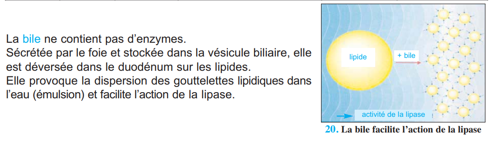
📷 Doc.20 — 20. La bile facilite l'action de la lipase : émulsion des lipides (p.70)'">
🔍 Chylomicrons : Dans les cellules intestinales (entérocytes), les acides gras, monoglycérides et glycérol se rassemblent pour reformer des triglycérides. Ceux-ci sont enrobés de protéines pour former des chylomicrons (lipoprotéines), qui sont sécrétés dans les vaisseaux lymphatiques. La lymphe se déverse dans le sang au niveau de la veine cave supérieure → tous les nutriments finissent dans la circulation sanguine.
✏️ Mini-quiz 5B
1. Les oses et acides aminés empruntent la voie .
2. Les acides gras à longue chaîne empruntent la voie .
3. La bile, produite par le foie, .
💡 À retenir : La dualité des voies d'absorption reflète les propriétés chimiques des nutriments. Les molécules hydrosolubles (oses, acides aminés) passent directement dans le sang. Les molécules liposolubles (acides gras, vitamines A,D,E,K) nécessitent une transformation préalable en chylomicrons et empruntent la voie lymphatique. La bile (produite par le foie, stockée dans la vésicule biliaire) ne contient pas d'enzymes mais facilite l'action de la lipase en émulsionnant les lipides.
📋 BILAN — Pages 69–71 (6 blocs)
1 La digestion : simplification moléculaire (p.69)
La digestion transforme les aliments simples (macromolécules) en . Les enzymes sont des . Elles agissent à des .
2 Spécificité enzymatique (p.69)
L'amylase salivaire hydrolyse . La pepsine hydrolyse . Le modèle explique cette spécificité.
3 Influence de la température (p.70)
L'activité est maximale à . À basse T°, les enzymes sont . À haute T° (>60°C), elles sont .
4 Influence du pH (p.70)
pH optimal : pepsine = , amylase = , trypsine = .
5 La bile (p.70)
La bile est sécrétée par le , stockée dans la . Elle .